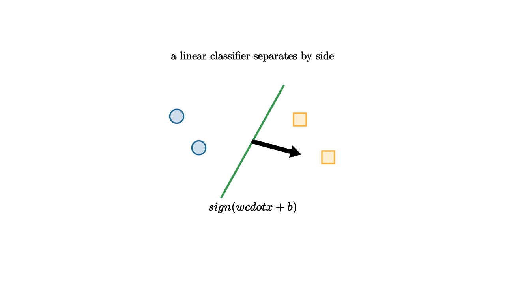

A linear classifier draws a line in two dimensions, a plane in three dimensions, and a hyperplane in higher dimensions. The rule is simple: compute a weighted sum and check which side of zero the point lands on. The weights define a normal vector. The bias slides the boundary.

source
let soft = |col, amount| lerp(WHITE, col, amount)
mesh classifier = [
center{1.35u} Text("a linear classifier separates by side", 0.62),
stroke{GREEN, 3} Line(0.5l + 0.9d, 0.5r + 0.9u),
stroke{BLACK, 2.5} Arrow(0r, 0.75r + 0.2d),
center{1.2l + 0.4u} fill{soft(BLUE, 0.22)} stroke{BLUE, 2} Circle(0.11),
center{0.85l + 0.1d} fill{soft(BLUE, 0.22)} stroke{BLUE, 2} Circle(0.11),
center{0.75r + 0.35u} fill{soft(ORANGE, 0.22)} stroke{ORANGE, 2} Square(0.2),
center{1.2r + 0.25d} fill{soft(ORANGE, 0.22)} stroke{ORANGE, 2} Square(0.2),
center{1.05d} Tex("sign(w \\cdot x + b)", 0.68)
]The margin is the distance from a point to the boundary. Large-margin classifiers prefer separators that leave a wide empty band between classes. This is a geometric form of caution. If future data is slightly noisy, a wide margin is less likely to change the label. The support vectors in a support vector machine are the training points that touch this band and determine where the boundary sits.
For a boundary
the signed distance from a point $x$ to the boundary is proportional to
The sign gives the predicted class. The magnitude gives confidence in the geometric sense: how far the point sits from the decision surface.
Linear does not mean weak. A linear boundary in a good feature space can be powerful. If raw coordinates cannot separate the data, new features can bend the problem into a space where a flat cut works. Squaring a coordinate, adding interactions, using Fourier features, or learning an embedding all follow this broad idea.
source
let soft = |col, amount| lerp(WHITE, col, amount)
"Raw Space"
mesh scene = [
center{1.25u} Text("raw space may be tangled", 0.62),
center{0r} fill{soft(BLUE, 0.18)} stroke{BLUE, 2} Circle(0.28),
center{0.85r} fill{soft(ORANGE, 0.18)} stroke{ORANGE, 2} Square(0.26),
center{0.85l} fill{soft(ORANGE, 0.18)} stroke{ORANGE, 2} Square(0.26)
]
play Grow(0.7)
"Feature Map"
scene = [
center{1.25u} Text("features can unfold geometry", 0.62),
stroke{BLACK, 2.5} Arrow(0.9l, 0.9r),
center{1.3l} Text("x", 0.64),
center{1.3r} Text("phi(x)", 0.64)
]
play Trans(0.9)
"Flat Cut"
scene = [
center{1.25u} Text("then a hyperplane can work", 0.62),
stroke{GREEN, 3} Line(0.2l + 0.9d, 0.2r + 0.9u),
center{0.8l + 0.35d} fill{soft(BLUE, 0.2)} stroke{BLUE, 2} Circle(0.12),
center{0.85r + 0.35u} fill{soft(ORANGE, 0.2)} stroke{ORANGE, 2} Square(0.22)
]
play Trans(0.9)This lesson is the bridge from geometry to learning. A model chooses a boundary, but the usefulness of that boundary depends on the coordinates. Much of modern machine learning is representation learning: find coordinates in which the task has a simple shape.
The lesson to keep: a classifier is a geometric partition of space. The equation is short, but the modeling question is large: what coordinates make the boundary simple, stable, and meaningful for new data?